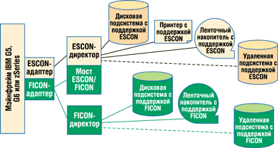

Олег Спиряев
Узкие места в компьютерных системах - вещь почти неизбежная, недаром говорят, что они всегда были и будут. Архитекторы систем и специалисты по управлению трафиком пытаются устранить наиболее очевидные из них, хотя и знают, что после устранения узкого места в одной части системы оно обычно возникает в другой. На протяжении многих лет узкие места возникали преимущественно на серверах; по мере функционального и технологического развития серверов они перемещались в сети и системы сетевого хранения данных. В последнее время появились очень крупные массивы хранения, которые позволяют переместить узкие места обратно в сеть. Современные мэйнфреймы обладают очень мощными ресурсами, в том числе и устройствами хранения достаточной емкости. Сегодня узкое место часто связано с процедурой перемещения данных с сервера и обратно - т. е. узким местом становится тракт передачи данных. Такие факторы, как рост объема данных и их централизация, а также "жадность" приложений нового поколения к пропускной способности, способны "поглотить" всю имеющуюся полосу пропускания, и даже этого будет недостаточно.
Несколько лет назад появилась возможность использовать технологию FICON (FIber CONnection), новое решение для каналов передачи информации, но лишь сегодня на рынке появились совместимые с ней такие действительно важные элементы тракта передачи данных, как устройства хранения. Пару лет назад многие поставщики систем хранения последовали примеру IBM и начали поставки крупных систем хранения, поддерживающих FICON. Сегодня пришло время серьезно отнестись к переходу на высокоскоростные каналы передачи информации на базе FICON - они стали привлекательными с точки зрения технологий и стоимости.
Напомним, что технология ESCON (Enterprise Systems CONnection), предшественница FICON, была большим шагом вперед по сравнению с более ранней технологией параллельных каналов с раздельной передачей данных и управляющей информации (так называемая bus and tag). Подобно пневматическим системам транспортировки документов, которые одно время были популярны в банках и розничных магазинах, она считалась верхом инженерной мысли. Но, как и пневматические системы, ESCON ограничивалась одной формой контейнера и передачей информации только в одном направлении в любой момент времени. Поддержка мультиплексной передачи в FICON по многим каналам аналогична пересылке множества сообщений в различных контейнерах в обоих направлениях одновременно. Многие эксперты считают эту технологию весьма привлекательной, и некоторые компании готовы внедрить ее у себя и использовать ее преимущества. Однако, по мнению специалистов, при определении оптимального способа реализации FICON ради максимальной окупаемости инвестиций следует учитывать не только технологические аргументы.
Хотя технология и обеспечивает повышение производительности, вопрос не только в этом. Предприятия должны оценить возможность размещения приложений на мэйнфреймах, ожидаемый рост или сокращение их числа и степень их критичности для бизнес-операций. Необходимо оценить и "возраст" мэйнфрейма, так как возможности IBM S/390 G5 или G6 существенно более ограниченны по сравнению с машинами новой серии zSeries. Следует также учитывать возможности уже имеющихся массивов хранения данных, особенно тех, что приобретены недавно. Кроме того, компании должны пересмотреть структуру своих центров хранения и обработки данных - возможно, из соображений надежности и устойчивости бизнеса удастся "отнести" данные в более удаленное место без ущерба для производительности. Также следует учитывать финансовые ограничения (бюджет) и график развития центров хранения и обработки данных. Так, аналитики полагают, что вызванное рецессией затишье после динамического роста прошлых лет может оказаться неплохим моментом для перехода на FICON.
Оценка преимуществ FICON
Не будет преувеличением сказать, что все начинается с мэйнфрейма. FICON - технология, пришедшая на смену царствовавшей последнее десятилетие ESCON, - обеспечивает повышенную производительность, расширенные функциональные возможности и связь на больших расстояниях. Скорее всего, эта технология вряд ли заинтересует те компании, которые не используют активно мэйнфреймы для решения следующих задач:
- обработки растущего числа бизнес-транзакций в рамках ограниченного времени, причем операции требуется выполнять круглосуточно;
- перемещения больших объемов данных между мэйнфреймом(ами) и устройствами хранения (дисковыми и ленточными);
- взаимодействия с географически удаленным хранилищем данных или центром хранения и обработки данных, которые в соответствии с новыми требованиями к обеспечению выживаемости бизнеса должны переноситься в более удаленное место.
Считается, что технология FICON более рентабельна в больших центрах хранения и обработки данных, к которым предъявляются два или три из перечисленных выше требований. Кроме того, корпорация IBM (http://www.ibm.com) внедряет технологию FICON только на самых последних моделях своих мэйнфреймов - zSeries/900, S/390 G5 и G6 (причем полнофункциональная FICON доступна только на zSeries).
Из опубликованных данных известно, что на серверах G5/G6 технология FICON обеспечила более чем трехкратное повышение скорости ввода-вывода и увеличение пропускной способности по сравнению с ESCON. Скорость ввода-вывода ESCON, FICON (FC mode z900) и FICON Express (FC mode z900) при работе с блоками по 4 Кбайт достигает 1200, 6000 и 7200 операций в секунду соответственно. Для блоков больших размеров (пакетов) эффективная пропускная способность может достигать соответственно 17, 74 и 100 Мбайт/с.
Таким образом, если к мэйнфрейму не предъявляется особо высоких требований из тех, что перечислены выше, резонно поинтересоваться, зачем, собственно, нужна эта технология. Как полагают эксперты, скорее всего, в ответе будут фигурировать потребности бизнеса, которые определяют требования к корпоративным ИТ-системам. Использование FICON позволяет предприятию получить довольно много выгод, в том числе расширение функциональных возможностей и упрощение сети. Внедрение FICON диктуется потребностями поддержки критически важных функций и обеспечения высокой производительности и пропускной способности. Это не технологические требования, а требования самого предприятия, определяемые запросами бизнес-подразделений и приложений, которые они развертывают на мэйнфреймах.
FICON - выгоды для бизнеса
Как известно, предприятиям постоянно приходится поддерживать свою ИТ-инфраструктуру на уровне, достаточном для удовлетворения текущих и будущих потребностей. При решении этой задачи приходится учитывать функциональное развитие технологий, бизнес-требования, финансовые ограничения, а также соотношение преимущества/затраты для всех этих параметров. Еще один фактор - необходимость или желание поддерживать технологии на достаточно высоком уровне, чтобы ИТ-система не слишком устаревала, ведь на неизбежное обновление безнадежно отставшей от времени системы придется потратить существенно больше средств. Технологии меняются постоянно и обычно в лучшую сторону. По мнению аналитиков, естественное противление всему новому часто обусловлено желанием получить максимум от существующих активов (в том числе оборудования, ПО и персонала). На продвижение вперед почти всегда требуются средства. Существует масса оправданий для откладывания этих затрат, но отложенное финансирование означает и задержку в получении преимуществ для бизнеса.
Экскурс в историюИстория FICON напоминает библейскую родословную. Параллельные каналы "родили" ESCON, ESCON "родил" Fibre Channel и FICON, поэтому Fibre Channel и FICON - по крайней мере "близнецы-братья". Это важно уяснить не столько для понимания последовательности развития технологий, сколько для осознания возможной быстроты внедрения и барьеров на этом пути. Здесь же отметим, что FICON как протокол передачи данных базируется на стандарте ANSI для систем Fibre Channel (FC-SB-2). Первый разработанный IBM стандарт общего назначения для связи между мэйнфреймами и внешними устройствами (диски, принтеры, ленточные накопители) основывался на параллельных подключениях, и этот подход мало чем отличался от многожильных кабелей и многоштырьковых разъемов, которые применялись в те годы для подключения настольных принтеров к персональным компьютерам. Множество параллельных проводов служили для переноса большего объема данных "за раз" (параллельно). В мэйнфреймах это называлось "bus and tag". Огромных размеров соединители и кабельная разводка были единственным способом связи до появления на рынке в 1990-х технологии ESCON. Технология ESCON была принципиально иной - в ней впервые вместо меди использовалось оптоволокно, а данные передавались не параллельно, а последовательно. Все прекрасно понимали, что ESCON намного лучше и значительно быстрее (по крайней мере, на бумаге), но для ее всеобщего принятия потребовалось множество испытаний и усилий по убеждению покупателей. Считается, что технология ESCON появилась во время застоя на рынке, а компания представила поддерживающие этот стандарт устройства с заметным запозданием, потому данная технология и встретила прохладный прием, а для широкого ее распространения понадобилось четыре года. С FICON история во многом повторилась. Впервые эту технологию IBM представила на серверах S/390 в 1997 г. Многим аналитикам сразу было понятно, что это во многом технически более совершенное решение. Однако на протяжении почти четырех лет FICON использовали практически исключительно для подключения ленточных накопителей (существенно более продвинутое решение для создания резервных копий и восстановления) и принтеров. И лишь в 2001 г. IBM наконец оборудовала FICON свою систему хранения Enterprise Storage Server под кодовым названием Shark. Это событие снова совпало с серьезным экономическим спадом, когда внедрение новых технологий на предприятиях замедлилось. Но в 2002 г. сложились обстоятельства, способствовавшие ускоренному принятию FICON. На сей раз концепция оптоволокна была уже не нова, а технологии сетей хранения данных (SAN) получили широкое распространение как в мире мэйнфреймов, так и за его пределами. Сейчас продолжается устойчивый рост рынка устройств хранения данных. Сегодняшние устройства, называемые директорами (director), с самого начала разработанные для поддержки ESCON, теперь поддерживают стандарт Fibre Channel, так что на основе этих же устройств можно развертывать FICON-решения. Кроме того, есть информация, что FICON будет развиваться, как и технология Fibre Channel, следовательно, подобные директоры также получат должное развитие вопреки небольшому отставанию от эволюции Fibre Channel. Разработчики считают, что FICON обеспечивает существенно большую функциональность.
|
Вообще говоря, эти выгоды очевидны: более быстрая система хранения и выборки данных, высокая пропускная способность, большая производительность коммуникаций между мэйнфреймами и подсистемами хранения и возможность большего территориального удаления центров хранения и обработки данных.
Быстрая система хранения и восстановления данных
Не секрет, что все стремятся добиться высокого быстродействия, но при этом важно определить узкое место самого мэйнфрейма. Все чаще показатели производительности ухудшаются не из-за частоты процессора мэйнфрейма, а из-за числа операций ввода-вывода и скорости их обработки системой. Для традиционной обработки транзакций и развивающегося электронного бизнеса нужны высокие скорости. Растущей армии клиентов и сотрудников нужно больше доступа к большему объему данных, и удовлетворение этого требования жизненно важно для большинства предприятий. Но подобная деятельность инициирует огромное число операций ввода-вывода между мэйнфреймом и подключенными к нему устройствами хранения (дисковыми массивами и ленточными накопителями). Чем быстрее удается перемещать данные и файлы между внешними устройствами и мэйнфреймом (быстрее, чем работает сам мэйнфрейм), тем быстрее выполняется работа, нужная клиентам и сотрудникам компании.
Именно в способности FICON обеспечивать существенно лучшее быстродействие операций ввода-вывода по сравнению с ESCON заключается ее преимущество. Это связано с такой технической характеристикой FICON, как способность одновременно поддерживать значительно большее число адресов устройств хранения данных. По мере роста важности бизнес-аналитики увеличивается число источников данных, а с ростом баз данных становится важнее поддержка большого числа адресов. Поскольку при прочих равных условиях каждое FICON-подключение обеспечивает передачу приблизительно в 6 раз большего потока данных и примерно в 5-7 раз большее число операций ввода-вывода в секунду, FICON позволяет выполнять существенно больший объем вычислений. В FICON это достигается за счет мультиплексирования и конвейерной обработки по технологии CCW (Channel Command Word), в которой для ускорения обработки операций ввода-вывода команды сеанса объединяются в пакеты.
Конечно, не стоит забывать простую истину: "реальный пробег автомобиля определяется конкретными условиями его эксплуатации". Реальная продуктивность определяется приложениями, рабочей нагрузкой и распределением устройств хранения данных. Но более "толстые" каналы в FICON позволят устранить многие узкие места подсистемы ввода-вывода.
Высокая пропускная способность
Как уже отмечалось, более быстрый ввод-вывод позволяет повысить производительность систем. Но есть и другой параметр, который необходимо учитывать, - пропускная способность. Ускорение работы и увеличение ее объема - задачи взаимосвязанные, но влияют на работу предприятия по-разному. Если заданный объем работы выполняется быстрее, решается только тактическая задача. Выполнение большего объема работы - стратегическая задача для большинства предприятий. Не следует забывать, что рабочие нагрузки имеют тенденцию к росту и постепенно "забивают" пропускную способность имеющихся каналов.
FICON решает обе задачи - ускорение выполнения работы и увеличение пропускной способности. А более эффективное развертывание дополнительных мощностей, повышающих пропускную способность, обеспечивает дополнительные выгоды. Созданный корпорацией IBM FICON-адаптер второго поколения, FICON Express (он был представлен в октябре 2001 г., тогда только на серверах семейства zSeries), способен одновременно поддерживать и стандартный трафик ввода-вывода, и внутренний трафик системы в рамках одного канала. В ESCON для этого требуются отдельные специализированные каналы.
Эффективность коммуникационной сети
Здесь снова разумно провести аналогию с пневматической системой труб. В любой момент времени по трубе может перемещаться только одна капсула и только в одном направлении. Именно поэтому к конечной точке часто подводили несколько труб. Единичность и однонаправленность - это характеристики, свойственные ESCON. FICON одновременно поддерживает множество потоков в обоих направлениях. Мало того, что количество адресатов взаимодействия у FICON в 16 раз больше, - эти операции выполняются с намного большей эффективностью. Таким образом, обеспечивается сразу два очень важных преимущества - увеличенная "толщина" канала (для поддержки связи с подсистемой хранения данных и обслуживания растущей вычислительной нагрузки) и консолидация каналов.
ESCON или FICON
Между двумя крайностями - обеспечения связи только средствами ESCON или только с применением FICON - существует широкий спектр промежуточных вариантов. Примеры их приведены на рис. 1-3 (на схемах опущены некоторые компоненты решений, в том числе удаленные ленточные накопители и принтеры, а также автономные средства подключения Coupling Facilities для Parallel Sysplex).
Первое решение (рис. 1) - это упрощенная схема типового современного ESCON-решения до введения FICON. ESCON-директор соединен посредством оптоволокна с мэйнфреймом и рядом локальных и удаленных внешних устройств. Каждая линия, как правило, представляет собой несколько оптоволоконных соединений. На схеме не показано оборудование, применяемое для увеличения расстояния до удаленного местоположения. Кроме того, не показаны дополнительные удаленные внешние устройства (ленточный накопитель и принтер), а также любые подключения к автономному подключению Coupling Facilitу.
 |
| Рис. 1. ESCON-решение.
|
На рис. 2 изображен переходный вариант с добавлением FICON-каналов между мэйнфреймом и ESCON-директором. Переходное решение заключается в установке моста ESCON/FICON на ESCON-директоре, который позволяет внешним устройствам на базе ESCON пользоваться преимуществами FICON, но только между мэйнфреймом и директором. Благодаря этому удается сохранить инвестиции во внешние устройства на базе ESCON.
| Рис. 2. Переходное решение между ESCON и FICON.
|
И, наконец, смешанная сеть с раздельными подсетями на базе ESCON и FICON (рис. 3). Наиболее вероятно, что предприятия станут внедрять FICON, устанавливая новый FICON-директор (или комбинируя FICON с существующим директором Fibre Channel) в совокупности с FICON-адаптерами на мэйнфрейме, а также поддерживающими FICON внешними устройствами, создавая раздельные ESCON- и FICON-сети (если только не предусматривается переходный мост между ESCON и FICON), каждую со своими возможностями. Приложения, которым нужны высокая производительность и пропускная способность или большое расстояние между устройствами, рекомендуется развертывать в FICON-сети. Со временем можно будет полностью вывести из эксплуатации устаревшее оборудование и сети на основе ESCON.
|  |
| Рис. 3. Смешанное решение с совмещением ESCON и FICON.
|
Кроме того, поставщики систем хранения данных могут предлагать свои варианты обновления до FICON в существующих массивах. Эти предложения также стоит учитывать при создании решения.
Большое расстояние между центрами хранения и обработки данных
Еще один мощный аргумент в пользу FICON - данная технология позволяет подключать устройства, разнесенные на расстояние до 10 км (это более чем в три раза превышает стандартные расстояния в ESCON-решениях). Кроме того, в FICON отсутствуют ограничения на скорость (невозможность работать с полным быстродействием) при увеличении расстояния, что остается серьезным ограничением в ESCON. С применением повторителей расстояние между устройствами в FICON можно увеличить до 100 км - это существенно выше 30-километрового предела для ESCON. Стоит к тому же отметить, что при подобном удалении скорость ESCON-решения существенно снижается.
По имеющейся информации, все больше компаний приходят к выводу, что эффективность планов обеспечения сохранности бизнеса в аварийных ситуациях (любого типа) оказывается под угрозой из-за того, что удаленный центр хранения и обработки данных размещен слишком близко к штаб-квартире. А технология FICON позволяет значительно увеличить расстояние до хранилища жизненно важных данных.
Сравнение ESCON и FICON
В приведенной ниже таблице проводится сравнение технологий по большинству важных характеристик. Здесь указаны только параметры реализации FICON в одномодовом режиме; многомодовый же режим (с короткой длиной волны) ограничен расстоянием 550 м. Преимущества FICON здесь также перечислены, но каждое из них может стать предметом отдельной технической дискуссии, выходящей далеко за рамки настоящей статьи.
Характеристики ESCON и FICON
| ESCON | FICON (большая длина волны) | Преимущества FICON | |
| Базовые технологии | |||
| Тип лазера | Коротковолновый в многомодовом режиме | Длинноволновый в одномодовом режиме | Увеличенное расстояние |
| Двунаправленность | Полудуплексная | Полнодуплексная | Более эффективное использование пропускной способности |
| Максимальное расстояние*, км | 3; 6 | 10; 20 | Меньше ограничения на расстояния |
| 9 (без ограничения скорости), примерно 30 (с повторителями) | 100 (без ограничения скорости, с повторителями) | ольшее удаление "зеркальных копий данных | |
| Подключения | |||
| Число адресов устройств в расчете на канал | 1000 | 16 000 | Взаимодействие большего числа устройств |
| Число устройств в расчете на порт | 4000 | 64 000 | Большая масштабируемость сетей |
| Размер фрейма, Кбайт | 1, невозможно смешивать мелкие и крупные блоки | 2, разрешается смешивать мелкие и крупные блоки | Больший объем данных в расчете на фрейм, большая гибкость |
| Пропускная способность канала, Мбайт/с | 17 | 100 (при использовании FICON Express) | Большая пропускная способность |
| Число операций ввода-вывода в секунду | 1200 | 7200 (при использовании FICON Express) | Позволяет обрабатывать больше операций ввода-вывода |
| Примечание: FICON может работать и на коротковолновом лазере
в многомодовом режиме, однако при этом резко сокращается расстояние (не
более 550 м). * Увеличение расстояния достигается за счет дополнительных технологических решений. |
|||
Расширение с применением FICON
Переход на FICON - решение, принимаемое на основании баланса затрат и преимуществ. Многие преимущества уже обсуждались выше. Трудно выразить в цифрах финансовую выгоду предприятия от более быстрого выполнения транзакций, обновления и резервирования. Но здесь следует учесть конкретные потребности конкретной компании. Если задачи, которые способна решить FICON, становятся проблемой или готовы ею стать, следует оценить баланс затрат и преимуществ. Отметим, что расходы на создание новой среды (например, при расширении) отличаются от затрат при обновлении существующей.
По имеющейся информации, при установке "с чистого листа" стоимость одной и той же пропускной способности в сети на базе FICON оказывается примерно в три раза меньше, чем для решения на основе ESCON. Следовательно, если нужно повысить пропускную способность существующей системы или устанавливать новую систему, то здесь и думать нечего, - за те же деньги можно получить шестикратное увеличение пропускной способности (и существенное повышение общей производительности). Рассмотрим некоторые детали этого решения.
Адаптеры
Адаптер располагается на мэйнфрейме и обеспечивает его подключение к коммуникационному каналу и в конечном счете к ESCON- или FICON-директору. Если речь идет о серверах семейства IBM zSeries/z900, то стоимость ESCON-адаптера с восемью ESCON-портами примерно равна стоимости 2-портового FICON-адаптера. Что касается пропускной способности, на FICON-адаптере эффективная полоса пропускания намного больше. А как известно, потребности в пропускной способности растут и со временем "съедают" всю доступную полосу.
Директоры
Директор - это многопортовый коммутатор с резервными внутренними компонентами и поддержкой горячей замены сбойных компонентов. Между мэйнфреймом и высокопроизводительным коммутатором располагается кабельная разводка (о ее особенностях - чуть ниже.) Впервые директоры появились в ESCON-решениях, которые проложили путь волоконной оптике как средству передачи данных. Отметим, что сети хранения данных SAN устанавливались на мэйнфреймах уже в 1990 г.
ESCON-адаптеры необходимо подключать к директору, "понимающему" протоколы ESCON. В прошлом это устройство выполняло одну функцию. ESCON-директоры и сейчас остаются довольно дорогими - их цена определяется числом портов (напомним, что технологии ESCON уже более 10 лет). Хотя некоторые ESCON-директоры можно переоборудовать для обеспечения FICON-подключения к мэйнфрейму, этот вариант обычно рассматривают как переходный.
Сегодня на рынке имеются универсальные директоры, которые поддерживают открытые протоколы Fibre Channel и протоколы FICON. У них очень привлекательная цена в расчете на порт. Нелишне напомнить, что каждый FICON-порт обслуживает в 4-8 раз больший трафик, чем специализированный порт ESCON-директора. Таким образом, трафик FICON, обслуживаемый директором Fibre Channel, обходится дешевле в расчете на порт, а каждый порт работает на большей скорости, так что окупаемость их существенно выше. Таким образом можно сохранить число портов (чтобы расширить пропускную способность) или объединить порты, сократив их число. В любом случае новый FICON-директор обойдется дешевле нового ESCON-директора.
Подключение устройств хранения
Существует дополнительное соединение между директором и массивом хранения данных или ленточными накопителями. Все массивы и диски должны поддерживать протоколы ESCON и/или FICON. В рамках конкретных устройств хранения цена не слишком различается, но при принятии подобного решения обязательно стоит проконсультироваться с поставщиком устройств хранения. При одинаковой цене в расчете на порт у FICON есть преимущество в производительности и пропускной способности. Поскольку оборудовать технологией FICON имеет смысл только высококлассные устройства хранения, производительность и пропускная способность обычно оказываются критически важными параметрами; поставщики стремятся, чтобы заказчики использовали FICON, так как это позволит задействовать максимум преимуществ предлагаемых ими устройств хранения.
Кабельная разводка
Соединения - очень важный момент. ESCON работает на волокне, которое считается устаревшим. В ESCON применяется многомодовый волоконно-оптический кабель диаметром 62,5 или 50 мкм, который также может служить для передачи трафика ATM, FDDI и Ethernet. В FICON используется более современное стекловолокно диаметром в пять с лишним раз меньше. Одномодовый 9-мкм кабель не подвержен межмодовой дисперсии; сигнал в нем проходит быстрее, чем в кабелях диаметром 62,5 или 50 мкм. Благодаря новому стекловолокну FICON обеспечивает преимущество в производительности, пропускной способности и дальности. Трафик протоколов FICON может транспортироваться по устаревшему оптоволокну, но из-за технологических ограничений затраты окажутся больше, а производительность, пропускная способность и/или дальность - намного хуже. Для поддержки многомодового режима в FICON на обоих концах кабеля необходимо предусмотреть устройство преобразования мод. Это сложные и дорогие устройства, они могут стоить практически столько же, сколько установка нового одномодового стекловолокна. При использовании мостов ESCON/FICON с многомодовым стекловолокном максимальное поддерживаемое FICON без повторителей расстояние сокращается до 550 м. Однако это ограничение технологии Fibre Channel, а не FICON.
Адаптация к существующей среде
Напомним, что все вышеприведенные рассуждения предполагают, что создается новая система хранения. Если речь идет о выборе между новой ESCON- или FICON-средой вместе с соединениями, решение абсолютно очевидно. Однако эксперты полагают, что если новое FICON-решение сравнивается с уже имеющейся ESCON-системой, затраты оказываются больше (с учетом затрат прошлых периодов и остаточной стоимости). Новое оптоволокно, новые адаптеры, новые директоры (или, по крайней мере, дополнительные порты на существующих директорах), а также новые устройства хранения (или добавление новых функций в существующие устройства хранения) - за все это придется платить. Ко всему этому придется добавить стоимость работ по переходу (например, оплату услуг поставщика устройства хранения).
Разработчики говорят, что беспроблемный переход от ESCON или моста ESCON/FICON к полному FICON-решению сравнительно прост, потому что соединения способны функционировать в смешанном режиме ESCON/FICON. FICON-каналы просто добавляются к существующим группам каналов. После установки новых устройств (FICON-директоров или мостов, FICON-адаптеров на унаследованных устройствах хранения и, при необходимости, новых соединений) мэйнфрейм переводится на новые каналы связи. Переопределение групп каналов позволит без проблем удалить устаревшие подключения. Этот метод требует достаточного числа портов для поддержки обеих конфигураций - старой и новой. Таким образом, FICON - далеко не бесплатная технология, но затраты на нее оправдаются, если учесть рост производительности, пропускной способности, эффективности и/или дальности связи.
Специалисты отмечают еще одну сложность. Если речь идет не о модели мэйнфрейма z900 (а пока подразумевался только z900), а об IBM G5 или G6, преимущества FICON на стороне мэйнфрейма не столь очевидны, и при анализе оказывается, что стоимостные преимущества перед ESCON не так уж велики. FICON все равно будет лучше во всех отношениях, но не с такой высокой окупаемостью инвестиций, как на серверах семейства zSeries. Так как затраты на G5/6 намного ниже, чем на zSeries, уровень окупаемости за счет повышения производительности ниже.
И в случае серверов zSeries, и в случае G5/6 есть другая возможность защиты имеющихся ИТ-активов. Клиент может оборудовать технологией FICON мэйнфрейм и установить мост для подключения унаследованных устройств хранения на базе ESCON. Таким образом, делается шаг в правильном направлении, хотя и в этом случае заказчик остается на полпути к использованию всего потенциала FICON.
Итог этих рассуждений таков: существует несколько вариантов решений. Так, можно полностью сохранить ESCON (самое дешевое решение) и довольствоваться существующей производительностью и другими параметрами. Считается, что это наилучший вариант для систем или приложений, которые не испытывают больших нагрузок или не будут расширяться.
Можно сохранить ESCON, но для подключения к внешним устройствам установить FICON-мосты - в качестве промежуточного этапа на пути к полнофункциональной FICON. Такой подход считают лучшим решением, когда нужно сохранить инвестиции в существующие директоры и внешние устройства, поддерживающие ESCON. В этом случае, как правило, требуется лишь повысить производительность ввода-вывода между мэйнфреймом и директором и/или увеличить расстояние между устройствами.
Установив FICON-сеть с FICON-директором, можно воспользоваться преимуществами нового устройства хранения или внешнего устройства на базе FICON. Такой подход считается оптимальным для приложений с высокими требованиями к производительности, для которых в будущем предполагается рост.
Кроме того, существует комбинация второго и третьего вариантов, где приложения с высокими требованиями к производительности перемещаются на FICON, а ESCON применяется лишь в менее требовательных приложениях. Это может стать наилучшим способом оптимизации старых и новых ИТ-активов.
Общее преимущество для систем хранения
Как отмечают эксперты, с высокой вероятностью вскоре появится возможность поддерживать среды на базе FICON и открытой Fibre Channel на одних директорах, разделяя трафик по специально созданным для этого зонам. Разумеется, при объединении физических ресурсов усложняется администрирование. Однобайтовая схема адресации устройств ввода-вывода мэйнфреймов препятствует использованию межкоммутаторных связей (interswitch link, ISL), которые применяются в открытых FC-системах (где используются трехбайтовые адреса портов) для организации каскадов коммутаторов. При работе в режиме FICON некоторые системы управления коммутаторами не способны поддерживать E-порты стандарта FC для ISL-связей. Это обычно не создает проблем, если мэйнфрейм или система хранения достаточно велики и оборудованы мощным директором.
Таким образом, если в компании имеются мэйнфреймы и устройства хранения, готовые для внедрения FICON, а системы или приложения сильно нагружены, следует как минимум рассмотреть возможность внедрения этой технологии. Даже если имеются унаследованные устройства, стоит подумать о переносе работающих на пределе приложений на FICON, а также спланировать перенос большей части системы на эту технологию при покупке дополнительных мэйнфреймов или устройств хранения.